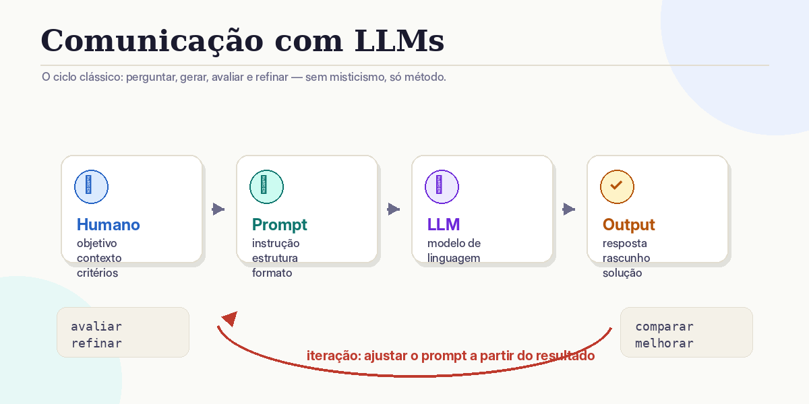
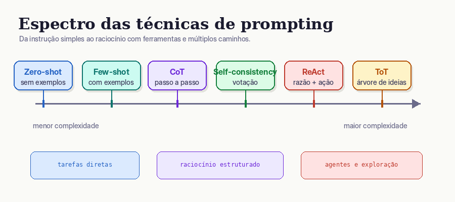
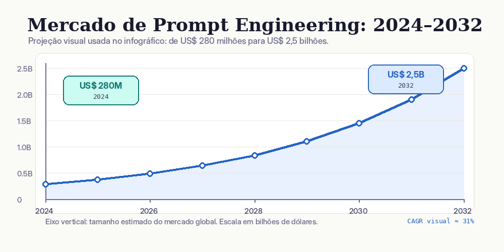

A arte e a ciência de comunicar com modelos de linguagem — transformando instruções vagas em outputs precisos, úteis e reproduzíveis.
01 — Definição
Modelos de linguagem (LLMs) são extraordinariamente capazes — mas a qualidade da resposta depende criticamente da qualidade da pergunta. Prompt engineering é a disciplina de desenhar, estruturar e iterar instruções que orientam o modelo para outputs precisos e úteis.
Prompt engineering é a prática de conceber instruções claras e estruturadas que guiam os Large Language Models para outputs precisos e úteis — combinando técnicas como zero-shot, few-shot e chain-of-thought com avaliação iterativa e critérios de controlo.
— Educative.io / Anthropic Docs, 2026

02 — Estrutura
Um prompt eficaz não é apenas uma pergunta — é uma instrução composta por vários elementos que, juntos, definem com precisão o que se espera do modelo.
Dizer ao modelo quem ele é ativa conhecimentos e estilos de resposta específicos.
Informação de fundo que enquadra a tarefa. Quanto mais relevante, mais precisa a resposta.
O núcleo do prompt — o que se quer que o modelo faça. Use verbos de ação claros.
Especificar estrutura, extensão e apresentação da resposta elimina ambiguidade.
03 — Técnicas principais
Diferentes tarefas exigem diferentes estratégias de prompting. As técnicas evoluem em complexidade: do simples (sem exemplos) para o sofisticado (raciocínio estruturado com ferramentas externas).

O modelo responde usando apenas o seu conhecimento interno, sem exemplos fornecidos. Funciona bem para tarefas simples e modelos grandes.
Fornece 2–5 exemplos de input→output antes da tarefa real. O modelo aprende o padrão esperado por imitação.
Pede ao modelo para mostrar o raciocínio intermédio antes da resposta final. Aumenta muito a precisão em tarefas complexas.
O modelo explora múltiplos ramos de raciocínio em paralelo, como uma árvore de decisão — ideal para problemas criativos ou de design.
Combina raciocínio com uso de ferramentas externas (pesquisa web, calculadoras, APIs). Potencia agentes de IA autónomos.
Gera várias respostas para o mesmo problema e seleciona a mais frequente. Reduz erros em tarefas de raciocínio por maioria de votos.
04 — Na prática
A diferença entre um output genérico e um output útil é, frequentemente, apenas a qualidade da instrução.
Problema: sem contexto, sem audiência, sem objetivo, sem formato definido → output genérico e inútil.
Resultado: email utilizável diretamente, alinhado com o objetivo real.
Sem nível de detalhe, sem audiência, sem objetivo → resposta enorme ou demasiado técnica.
Resultado: explicação calibrada, com analogia memorável e aplicação concreta.
05 — Boas práticas
Detalhes precisos (extensão, formato, audiência) eliminam ambiguidade e reduzem retrabalho. Verbos de ação claros orientam o modelo.
Especifique formato, estrutura e comprimento. "Responde em JSON" ou "lista com 5 pontos" dá resultados muito mais usáveis.
Para tarefas complexas, adicione "pensa passo-a-passo" ou "mostra o teu raciocínio" antes da resposta final.
Prompt engineering é experimental. Varia elementos isolados (papel, contexto, formato) para perceber o impacto de cada mudança.
2–5 exemplos de input→output bem escolhidos ensinam o modelo o padrão esperado melhor do que qualquer descrição verbal.
"Responde de forma concisa" funciona melhor do que "Não escrevas respostas longas". Instruções positivas são mais eficazes.
Atribuir um papel ao modelo ("Atua como...") ativa domínios de conhecimento e estilos de comunicação específicos.
Templates reutilizáveis para tarefas recorrentes mantêm consistência e poupam tempo. Versione e documente os melhores.
06 — Contexto e relevância
Em 2025, prompt engineering deixou de ser nicho para se tornar competência estratégica — em empresas, investigação e na vida quotidiana.

07 — Para levar para casa
Prompt engineering não é magia — é um processo sistemático e iterativo que melhora com prática.
O que é que o output deve conter? Para quem? Em que formato? Escreve isso antes de escrever o prompt.
Tarefa simples → Zero-Shot. Padrão específico → Few-Shot. Raciocínio complexo → Chain-of-Thought. Agentes → ReAct.
Papel, contexto, tarefa, formato de output e tom. Não omitas nenhum elemento relevante.
O resultado está alinhado com o objetivo? Há gaps de informação? O formato está correto?
Ajusta o papel, adiciona exemplos, pede raciocínio explícito. Varia elementos isolados para perceber o impacto.
Guarda os melhores prompts como templates reutilizáveis. Partilha com a tua equipa. Constrói uma biblioteca.